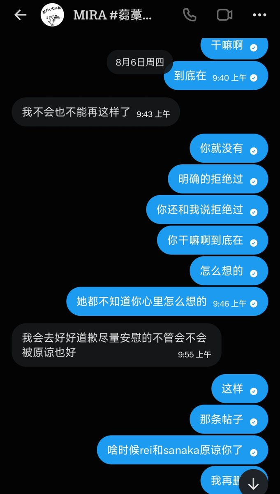
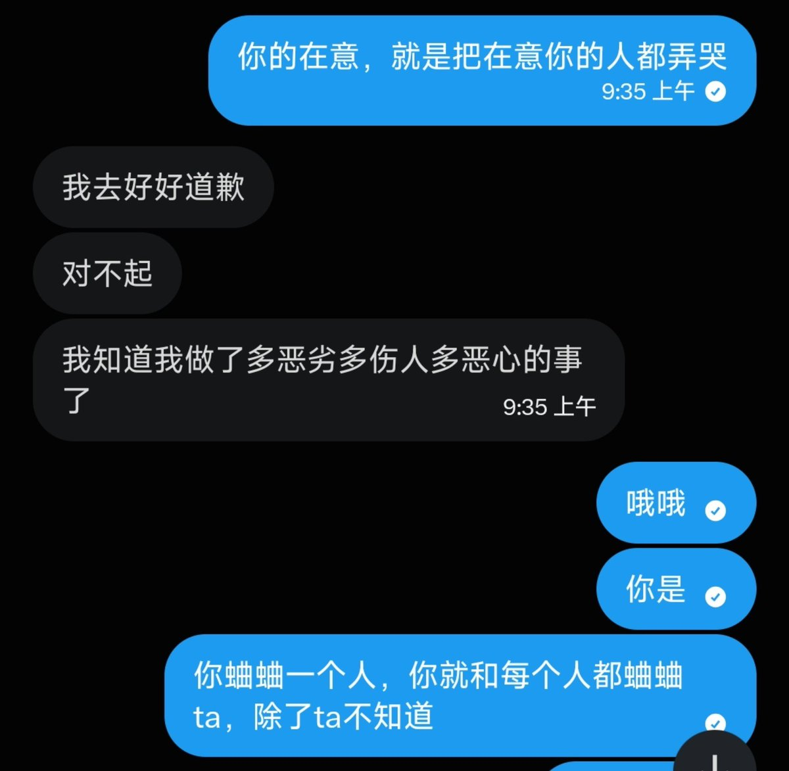
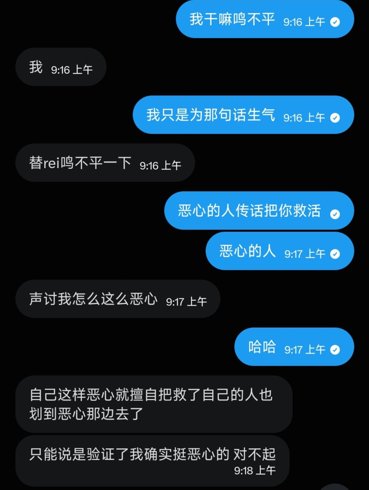

要不咱好好坐下来谈一谈，需要我把我和你的所有聊天记录全发出来吗？你把rei逼死了，这就是「会去好好道歉尽量安慰的不管会不会被原谅」吗，你真是个杀人犯，rei在最后的时刻，还在给你发消息，你知道她心里想什么吗，我本不想把rei拉进来，我只想她安安静静的睡一个好觉，可你呢？我不想和你计较我怎么怎么样，我只想你带着永远的愧疚感活下去，我只想让你这辈子都忘不了，是谁救了你的命，又是谁把除了你爹妈之外，最喜欢你的人，给害死了。
要不我把我和你的所有聊天记录全发出来吧，包括去年夏天你精神出轨和我聊骚的那些到八月份的聊天记录，我全存着呢，我不怕丢脸@MiraOmicronCeti
要不我把我和你的所有聊天记录全发出来吧，包括去年夏天你精神出轨和我聊骚的那些到八月份的聊天记录，我全存着呢，我不怕丢脸@MiraOmicronCeti


